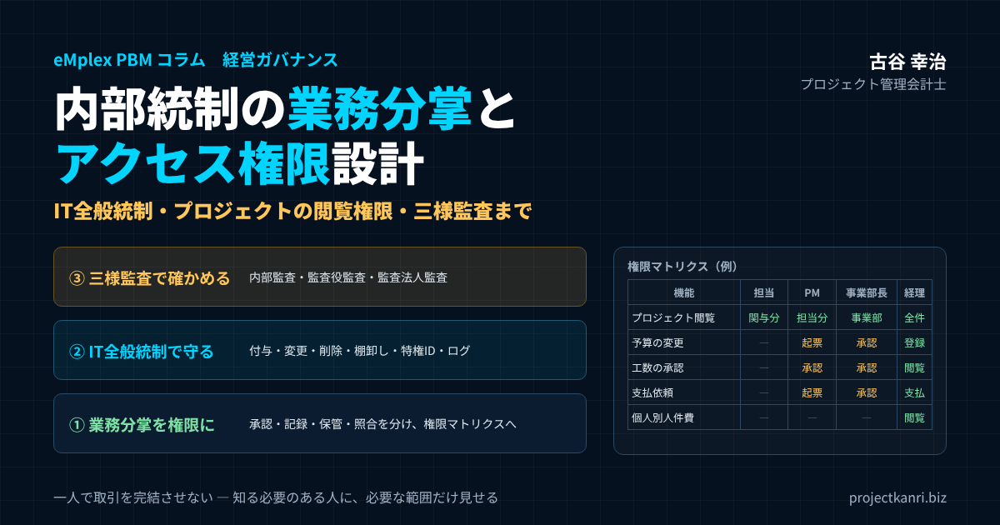

内部統制の業務分掌とアクセス権限設計―IT全般統制、プロジェクトの閲覧権限、内部監査・監査役監査・監査法人監査（三様監査）まで

結論：内部統制は「業務分掌 × アクセス権限 × 三様監査」で機能します
この記事の要点
- 業務分掌（職務分掌）：承認・記録・保管・照合を分け、一人で取引を完結させない
- アクセス権限：業務分掌を権限マトリクスに落とし込み、最小権限・役割単位で設定
- プロジェクトの閲覧権限：範囲（担当→PM→事業部→全社）と機密性（人件費・外注単価）の2軸で設計
- IT全般統制：付与・変更・削除・棚卸し、特権ID、ログでアクセス管理を守り続ける
- 三様監査：内部監査・監査役監査・監査法人監査の違いを理解し、連携して重複と漏れをなくす
プロジェクト管理会計士の古谷です。上場を目指す会社、あるいは会社の規模が大きくなってきた会社の経営者や管理部門の方から、内部統制についての相談をいただくことが増えています。規程は作った、承認の流れも決めた、それでも監査で指摘を受ける。社員が増えて、誰がどのデータを見られるのか分からなくなってきた。そうした悩みです。
結論から申し上げます。内部統制は、三つの要素がかみ合って、初めて機能します。一つ目は、業務分掌です。誰がどの業務を担い、誰が何を承認するのかを、役割として分けておくことです。二つ目は、アクセス権限です。業務分掌で決めた役割を、システムの権限として正しく設定し、守り続けることです。そして三つ目は、監査です。内部監査、監査役監査、監査法人監査という三つの監査、いわゆる三様監査によって、内部統制が設計どおりに動いているかを確かめることです。
多くの会社でつまずくのは、この三つのつながりです。規程の上では業務を分けていても、システムでは全員が同じ権限を持っている。権限は設定したものの、異動や退職のたびに見直されず、いつの間にか実態とずれている。監査では指摘を受けるものの、指摘が業務分掌やシステムの設定の見直しにつながらない。三つがばらばらに運用されていると、内部統制は形だけのものになってしまいます。
私は、エンプレックス（現SCSK）でCFOを務めていた頃、上場企業としての内部統制の整備と運用に取り組みました。そして独立後は、上場準備を含め、200社を超える企業の経営管理の仕組みづくりを支援してきました。その経験から、本稿では、内部統制の基本から、プロジェクト型ビジネスにおける業務分掌、プロジェクトの閲覧権限を含むアクセス権限の設計、IT全般統制、そして三様監査の違いと連携までを、実務の視点で体系的にお伝えします。
内部統制とは：4つの目的と6つの基本的要素
最初に、内部統制とは何かを確認しておきます。日本の上場企業に適用される内部統制報告制度、いわゆるJ-SOXの基準では、内部統制を、業務の有効性と効率性、報告の信頼性、事業活動に関わる法令等の遵守、資産の保全という四つの目的を達成するために、組織のすべての者によって遂行されるプロセスと定義しています。
| 区分 | 内容 |
|---|---|
| 4つの目的 | ①業務の有効性及び効率性 ②報告の信頼性 ③事業活動に関わる法令等の遵守 ④資産の保全 |
| 6つの基本的要素 | ①統制環境 ②リスクの評価と対応 ③統制活動 ④情報と伝達 ⑤モニタリング ⑥ITへの対応 |
※2023年改訂の内部統制基準（2024年4月1日以後開始事業年度から適用）。
そして、内部統制は、統制環境、リスクの評価と対応、統制活動、情報と伝達、モニタリング、ITへの対応という六つの基本的要素から構成されます。本稿で扱う業務分掌は主に統制環境と統制活動に、アクセス権限は統制活動とITへの対応に、三様監査はモニタリングに、それぞれ深く関わっています。
内部統制の基準は、2023年に改訂されました。改訂後の基準は、2024年4月1日以後に開始する事業年度から適用されています。主な改訂点としては、目的の一つが「財務報告の信頼性」から「報告の信頼性」に改められたこと、不正のリスクへの考慮が明示されたこと、経営者による内部統制の無効化への対応が示されたこと、ITへの対応として外部に委託した業務に関する統制やサイバーリスクを踏まえたセキュリティの確保の重要性が加わったこと、そして内部監査人や監査役等の役割が明確にされたことなどが挙げられます。
特にITへの対応の強化は、本稿のテーマであるアクセス権限と直結しています。業務の多くがシステムやクラウドサービスの上で行われるようになった今、誰がどのデータにアクセスできるのかを管理することは、内部統制の中心的な課題になっています。
業務分掌（職務分掌）とは：一人に権限を集中させない仕組み
業務分掌とは、組織の中で、誰がどの業務を担当し、どのような権限と責任を持つのかを定めることです。内部統制の文脈では、職務分掌、あるいは職務の分離とも呼ばれます。その中心にある考え方は、一つの取引の始まりから終わりまでを、一人の人が完結できないようにすることです。
たとえば、一人の担当者が、取引先を登録し、発注し、検収し、支払いの手続きまで行えるとしたら、架空の取引先への支払いという不正が、誰にも気づかれずに行えてしまいます。不正だけではありません。誤りがあっても、それを確かめる人がいなければ、誤りはそのまま帳簿に残ります。業務を複数の人に分け、互いに確かめ合う仕組みにすることで、不正と誤りの両方を防ぐことができます。
業務分掌の基本は、取引に関わる機能を、少なくとも次の四つに分けることです。取引を承認する機能、取引を記録する機能、資産を保管する機能、そして記録と実物を照合する機能です。この四つを、同じ人が兼ねないように役割を分けます。
| 機能 | 内容 | プロジェクト型ビジネスの例 |
|---|---|---|
| 承認 | 取引を行ってよいかを判断する | 外注の発注・支払依頼・予算変更の承認 |
| 記録 | 取引を帳簿やシステムに記録する | 経理による仕訳の計上 |
| 保管 | 現金・預金・資産を管理する | 支払の実行、銀行口座の管理 |
| 照合 | 記録と実物・外部の証拠を突き合わせる | 通帳・請求書・検収書と帳簿の照合 |
業務分掌を定めた文書としては、業務分掌規程と職務権限規程が一般的です。業務分掌規程は、部署ごとにどの業務を担当するのかを定めます。職務権限規程は、役職ごとに、どの金額までの取引を承認できるのか、どのような事項を決裁できるのかを定めます。職務権限規程の中で、決裁の権限を一覧にしたものは、職務権限表や決裁権限表と呼ばれます。
ここで大切なのは、規程は出発点にすぎないということです。規程で業務を分けても、実際の業務の中で、一人の担当者が複数の役割を兼ねていれば、業務分掌は機能していません。そして、今日の業務の多くはシステムの上で行われます。システムの権限が、規程で定めた業務分掌どおりに設定されているかどうか。そこまで確かめて、初めて業務分掌は実効性を持ちます。
プロジェクト型ビジネスの業務分掌：受注から入金までを誰が担うか
プロジェクト型ビジネスでは、業務分掌をプロジェクトの流れに沿って考えることが大切です。受注、予算の作成、外注の発注、工数の記録、検収、請求、入金、支払い。それぞれの段階で、誰が起票し、誰が承認し、誰が記録するのかを決めておきます。
| 業務 | 起票・実施 | 承認 | 記録・確認 |
|---|---|---|---|
| 受注・契約 | 営業 | 事業部長（金額により経営） | 経理（契約・受注の登録確認） |
| プロジェクト予算 | PM | 事業部長 | 経理（予算登録） |
| 外注の発注 | PM | 事業部長 | 購買・経理 |
| 工数の記録 | 各メンバー | 上長・PM | 経理（労務費の計算） |
| 工数の付け替え | PM | 事業部長 | 経理（記録の確認） |
| 検収・売上計上 | PM（完了報告） | 事業部長 | 経理（検収書で確認し計上） |
| 支払 | 経理（支払依頼の起票） | 経理責任者・経営 | 経理（記帳・照合） |
※会社の規模や組織に合わせて調整してください。
プロジェクト型ビジネスに特有の論点として、私が特に注意を促しているのが三つあります。一つ目は、プロジェクトマネージャーへの権限の集中です。プロジェクトマネージャーは、プロジェクトの予算を作り、外注先を選び、工数を承認し、完了の報告を行います。現場の判断を速くするためにはある程度の権限が必要ですが、予算の作成と承認、外注の発注と検収を一人で完結できる状態は避けなければなりません。
二つ目は、工数の記録と承認です。プロジェクトの原価の大部分は、社員の工数から計算されます。工数の記録を本人が入力し、上長が承認する流れが基本ですが、プロジェクト間で工数を付け替える操作が自由にできると、赤字のプロジェクトの原価を黒字のプロジェクトに移すといったことが可能になります。工数の付け替えには、承認と記録を残す仕組みが必要です。
三つ目は、売上の計上の根拠です。プロジェクトの完了や検収の報告を、プロジェクトマネージャーだけの判断で行えるようにすると、期末に売上を前倒しで計上する誘因が生まれます。検収書などの客観的な証憑をもとに、経理が売上の計上を確認する流れにしておくことが大切です。収益認識の基準のもとで、進捗度に応じて売上を計上する場合には、進捗度の根拠となる原価の見積りの妥当性も、確認の対象になります。
これらの論点に共通しているのは、プロジェクトの数字を作る人と、その数字を確かめる人を分けておくことです。プロジェクトマネージャーが現場の判断を素早く行えることと、プロジェクトの数字の信頼性を保つことは、両立できます。そのための仕組みが、業務分掌と、それを支えるシステムの権限と承認の流れなのです。
人数の少ない会社の業務分掌：補完的な統制で補う
人数の少ない会社では、すべての業務を別々の人に分けることが難しい場合があります。経理の担当者が一人しかいない、営業とプロジェクトマネージャーを同じ人が兼ねている。そうした会社でも、業務分掌の考え方を諦める必要はありません。
分けられない業務がある場合には、補完的な統制を組み合わせます。たとえば、経理の担当者が支払いの手続きと記帳の両方を行う場合には、経営者が毎月、支払いの一覧と通帳の動きを確認する。営業とプロジェクトマネージャーを兼ねる人が見積と発注の両方を行う場合には、一定の金額以上の取引は、別の役職者の承認を必要とする。事後の確認やモニタリングを組み合わせることで、分けられないことによるリスクを小さくできます。
大切なのは、分けられていない業務を、分けられていないまま放置しないことです。どの業務が分けられていないのかを一覧にし、それぞれにどのような補完的な統制をかけているのかを説明できるようにしておく。上場準備の審査や監査では、この説明ができるかどうかが問われます。
なぜ業務分掌とアクセス権限が不正を防ぐのか：不正のトライアングルから考える
業務分掌とアクセス権限の管理が、なぜ不正の防止に効果があるのかを、不正のトライアングルという考え方から整理しておきます。不正のトライアングルとは、不正は、動機やプレッシャー、機会、そして正当化という三つの要素がそろったときに起きやすい、という考え方です。
三つの要素のうち、会社が仕組みで直接小さくできるのは、機会です。動機やプレッシャー、正当化は、個人の事情や心の中の問題が大きく、会社が完全に取り除くことはできません。しかし、機会は、業務分掌とアクセス権限によって、確実に減らすことができます。一人で取引を完結できない、権限のないデータには触れられない、操作の記録が残る。こうした状態では、不正を実行する機会そのものが限られます。
プロジェクト型ビジネスでは、プロジェクトの業績が評価や賞与に結びついていることが多く、赤字のプロジェクトを抱えた責任者には、数字をよく見せたいというプレッシャーがかかります。工数の付け替えや、売上の前倒しの計上は、こうしたプレッシャーから生まれやすい行為です。だからこそ、工数の付け替えや売上の計上に、承認と記録の仕組みを組み込んでおくことが重要なのです。
業務分掌をシステムのアクセス権限に落とし込む：権限マトリクスの作り方
業務分掌を実効性のあるものにするには、それをシステムのアクセス権限に落とし込む必要があります。そのための道具が、権限マトリクスです。権限マトリクスとは、縦に役割、横にシステムの機能を並べ、それぞれの役割がどの機能に対して、閲覧、登録、更新、承認のどの操作をできるのかを一覧にした表です。
| 機能 | 担当者 | PM | 事業部長 | 経理 | 経営 | 内部監査 |
|---|---|---|---|---|---|---|
| プロジェクトの閲覧 | 関与分 | 担当分 | 事業部分 | 全件 | 全件 | 全件（閲覧のみ） |
| 予算の登録・変更 | ― | 起票 | 承認 | 登録 | 閲覧 | 閲覧 |
| 工数の入力 | 本人分 | 本人分 | 本人分 | ― | ― | ― |
| 工数の承認 | ― | 承認 | 承認 | 閲覧 | 閲覧 | 閲覧 |
| 外注の発注・支払依頼 | ― | 起票 | 承認 | 支払処理 | 閲覧 | 閲覧 |
| 個人別の労務費明細 | ― | ― | ― | 閲覧 | 閲覧 | 閲覧 |
| マスタ・権限の設定 | ― | ― | ― | ― | 承認 | 閲覧 |
※一つの例です。起票と承認が同じ役割にならないことを確認してください。
権限マトリクスを作るときの原則は、最小権限です。それぞれの役割に、業務に必要な最小限の権限だけを与えます。「念のため」「便利だから」という理由で広い権限を与えると、業務分掌が崩れ、誤操作や不正の余地が生まれます。
もう一つの原則は、権限を人ではなく役割に付けることです。一人ひとりの社員に個別に権限を設定していくと、人数が増えるにつれて管理ができなくなります。営業、プロジェクトマネージャー、事業部長、経理、経営、監査といった役割ごとに権限のセットを定義し、社員には役割を割り当てる。異動のときは役割を付け替えるだけで済み、誰がどの権限を持っているのかも一目で分かります。
権限マトリクスを作ったら、規程の業務分掌と照らし合わせて、矛盾がないかを確認します。規程では承認者と起票者を分けているのに、システムでは同じ役割が起票と承認の両方をできるようになっていないか。こうした矛盾を見つけて解消することが、業務分掌とアクセス権限をつなぐ作業です。
兼務している社員への対応も決めておきます。たとえば、営業とプロジェクトマネージャーを兼ねる社員に、両方の役割を割り当てると、両方の権限を合わせた広い権限を持つことになります。その結果、本来分けるべき機能を一人で行えるようになっていないかを確認し、必要に応じて、承認だけは別の人が行うといった制約をかけます。
プロジェクトの閲覧権限の設計：誰に、どこまで見せるか
プロジェクト型ビジネスのアクセス権限で、とりわけ悩ましいのが、プロジェクトの閲覧権限です。プロジェクトの予算、実績、粗利、着地見込み。これらの情報を、誰に、どこまで見せるのか。見せすぎれば情報の漏洩や誤用のリスクが高まり、見せなさすぎれば現場が採算を意識できなくなります。
閲覧権限の設計で基本となるのは、知る必要のある人に、必要な範囲で見せるという考え方です。その出発点として、プロジェクトの情報を、範囲と機密性の二つの軸で整理します。
| 情報 | 担当者 | PM | 事業部長 | 経理・経営 |
|---|---|---|---|---|
| 自分が関わるプロジェクトの粗利・着地見込み | 閲覧可 | 閲覧可 | 閲覧可 | 閲覧可 |
| 他のプロジェクトの収支 | 不可 | 不可（担当外） | 事業部内のみ | 全件 |
| 職位別標準コストレートでの労務費 | 不可 | 閲覧可 | 閲覧可 | 閲覧可 |
| 個人別の人件費・労務費明細 | 不可 | 不可 | 不可 | 経理・人事のみ |
| 外注先ごとの単価明細 | 不可 | 担当分 | 事業部内 | 閲覧可 |
※一つの例です。自社の情報の機密性に応じて設計してください。
範囲の軸では、担当者は自分が関わるプロジェクト、プロジェクトマネージャーは自分が責任を持つプロジェクト、事業部長は自分の事業部のすべてのプロジェクト、経理と経営は全社のプロジェクト、という階層で閲覧の範囲を広げていきます。
機密性の軸で特に注意が必要なのが、人件費に関わる情報です。プロジェクトの労務費は、社員一人ひとりの工数にコストレートを掛けて計算されます。コストレートを個人ごとの給与から計算している場合、プロジェクトの原価の明細を見れば、特定の社員の給与が推測できてしまいます。そのため、プロジェクトの原価は、職位ごとの標準的なコストレートで計算する、あるいは、個人別の労務費の明細は経理と人事だけが閲覧できるようにする、といった配慮が必要です。
取引先との契約金額や外注の単価も、機密性の高い情報です。外注先ごとの単価が社内で広く見られる状態になっていると、交渉上の不利益につながったり、外注先の情報が外部に漏れたりするおそれがあります。外注の単価の明細は、発注に関わる担当者と管理部門に限って閲覧できるようにしておくとよいでしょう。
一方で、閲覧を制限しすぎることにも弊害があります。プロジェクトマネージャーが自分のプロジェクトの粗利や着地見込みを見られなければ、採算を意識した判断はできません。すべての社員が採算を意識する組織を目指すなら、少なくとも、自分が関わるプロジェクトの粗利と着地見込みは、担当者にも見えるようにしておくことをお勧めします。見せる情報と隠す情報を、目的に応じて丁寧に分けることが、閲覧権限の設計の要です。
閲覧権限の設計は、組織の変更のたびに見直す必要があります。事業部の新設や統合、プロジェクトの体制の変更があれば、閲覧の範囲も変わります。権限の棚卸しとあわせて、閲覧の範囲が組織の実態に合っているかを、定期的に確認してください。
プロジェクトの閲覧権限で陥りやすい5つの失敗
支援の現場で、プロジェクトの閲覧権限についてよく見かける失敗を五つ挙げておきます。
一つ目は、全員が全件を見られる状態です。システムを導入したときに、設定の手間を省いて全員に同じ権限を与え、そのまま運用している。社員が少ないうちは問題が表面化しませんが、人数が増えるほど、情報の漏洩や誤操作のリスクが高まります。
二つ目は、エクセルのファイルによる管理です。プロジェクトの収支をエクセルで管理し、共有のフォルダに置いている会社では、フォルダの権限の設定次第で、誰でもファイルを開き、書き換え、持ち出すことができてしまいます。誰がいつ何を変えたのかの記録も残りません。
三つ目は、退職者や異動者の権限の放置です。退職した社員のアカウントが残っている、異動した社員が前の部署のプロジェクトを見られるままになっている。これは、監査で最もよく指摘される項目の一つです。
四つ目は、兼務者の権限の膨張です。複数の部署やプロジェクトを兼務する社員に、それぞれの役割の権限を足し合わせていくうちに、本人も把握していないほど広い権限を持つようになっている。
五つ目は、閲覧と編集の区別がないことです。数字を見る必要がある人に、編集の権限まで与えてしまう。経営者が閲覧のためにシステムに入ったつもりで、誤って数字を書き換えてしまう、ということも起こり得ます。閲覧と編集は、明確に分けて権限を設定してください。
| 失敗 | 対策 |
|---|---|
| 全員が全件を見られる | 役割ごとの閲覧範囲を設定し、権限マトリクスで管理 |
| エクセルを共有フォルダで管理 | システムに一元化し、閲覧・変更の記録を残す |
| 退職者・異動者の権限が残る | 人事の手続きと連動して削除・変更、定期的な棚卸し |
| 兼務者の権限が膨らむ | 兼務の開始・終了時に見直し、起票と承認の兼任を制限 |
| 閲覧と編集の区別がない | 閲覧専用の権限を設け、編集は必要な役割に限定 |
IT全般統制とは：4つの領域とアクセス管理の位置づけ
ここからは、システムの側の統制、IT全般統制について見ていきます。内部統制の基準では、ITに関する統制を、IT全般統制とIT業務処理統制の二つに分けて考えます。
IT業務処理統制とは、個々の業務の処理の中に組み込まれた統制です。たとえば、入力された金額が一定の範囲を超えたら警告を出す、承認されていない伝票は記帳できない、工数と単価から労務費を自動で計算する、といったものです。
IT全般統制とは、こうした業務処理統制が、継続して正しく機能する環境を保証するための統制です。どれほど優れた業務処理統制を組み込んでも、誰でもプログラムを書き換えられたり、権限のない人がデータを変更できたりすれば、その統制は信頼できません。IT全般統制は、業務処理統制の土台なのです。
| 領域 | 主な内容 |
|---|---|
| ① システムの開発・保守 | 開発・変更の承認、テスト、本番への移行の管理 |
| ② システムの運用・管理 | ジョブの実行管理、障害対応、バックアップ |
| ③ システムの安全性の確保（アクセス管理） | 権限の付与・変更・削除、棚卸し、特権ID、パスワード・多要素認証、ログ |
| ④ 外部委託に関する契約の管理 | 委託先の選定・契約、委託先の統制の確認（SOCレポート等） |
IT全般統制は、一般に、システムの開発と保守、システムの運用と管理、内外からのアクセス管理などシステムの安全性の確保、そして外部委託に関する契約の管理という四つの領域で整理されます。このうち、本稿のテーマであるアクセス権限は、システムの安全性の確保の中心に位置しています。
上場準備の監査や審査で、IT全般統制として最もよく確認されるのが、このアクセス管理です。権限が業務分掌どおりに設定されているか、権限の付与や変更が承認されているか、退職者の権限が速やかに削除されているか、強い権限を持つ管理者のIDが適切に管理されているか。これらは、どのような規模の会社でも、まず問われる項目です。
IT全般統制のアクセス権限管理：付与・変更・削除・棚卸しの実務
アクセス権限の管理は、権限のライフサイクル、つまり付与、変更、削除、そして定期的な棚卸しの四つの場面で考えると整理しやすくなります。
| 場面 | 手続き | 残す記録 |
|---|---|---|
| 付与 | 申請→上長・管理者の承認→付与 | 申請書・承認記録・付与日 |
| 変更 | 異動・昇格・兼務時に追加と削除を同時に実施 | 変更申請・承認記録 |
| 削除 | 退職日に停止・削除。人事の手続きと連動 | 削除日・人事情報との照合 |
| 棚卸し | 半年〜四半期ごとに全アカウントを部署責任者が確認 | 確認結果・不要権限の削除記録 |
| 特権ID | 使用者の限定、共有の禁止、使用記録の定期確認 | 使用ログ・確認記録 |
まず、付与です。新しい社員の入社や、新しいシステムの利用開始のときには、申請と承認の手続きを経て権限を付与します。申請には、どの役割の権限が必要なのか、その理由は何かを記載し、上長とシステムの管理者が承認します。権限を付与した記録は、後から確認できるように保存しておきます。
次に、変更です。異動や昇格、兼務の開始と終了のときには、権限を見直します。新しい役割の権限を追加するだけでなく、前の役割の権限を外すことを忘れないようにします。異動のたびに権限が足されていくと、気づかないうちに広い権限を持つ社員が生まれます。
そして、削除です。退職した社員のアカウントは、退職日に速やかに停止または削除します。人事の退職の手続きと、システムのアカウントの削除の手続きを連動させ、人事から管理者に退職の情報が確実に届く流れを作っておくことが大切です。外部の委託先の担当者や、一時的に利用した協力会社のアカウントも、利用の終了とともに削除します。
最後に、定期的な棚卸しです。少なくとも半年に一度、できれば四半期に一度、すべてのアカウントと権限の一覧を出力し、各部署の責任者が、自部署の社員の権限が業務に照らして適切かを確認します。確認した結果と、見つかった不要な権限の削除の記録を残します。この棚卸しは、付与や削除の手続きの漏れを見つけるための、最後の安全網です。
これらに加えて、特権ID、つまりシステムの設定を変えたり、すべてのデータを変更したりできる管理者のIDの管理も重要です。特権IDを使う人を限定し、使用したときの記録を残し、定期的に使用の状況を確認します。複数の人で一つの管理者のIDを共有することは避け、誰が操作したのかを特定できるようにしておきます。パスワードの管理や、多要素認証の導入といった、なりすましを防ぐ対策も、アクセス管理の一部です。
そして、操作の記録、いわゆるログの保存と確認です。誰が、いつ、どのデータを見て、何を変更したのか。重要なデータの変更や、承認の操作の記録が残っていれば、問題が起きたときに原因を突き止めることができます。記録が残ること自体が、不正を思いとどまらせる効果も持ちます。
これらの手続きは、文書にして定め、実際に運用した記録を残すことが大切です。手続きが決まっていても、運用の記録がなければ、監査の場で運用されていたことを示すことはできません。
IT業務処理統制：承認ワークフローと自動計算で誤りと不正を防ぐ
IT全般統制が土台だとすれば、その上に乗るIT業務処理統制は、日々の業務の誤りと不正を直接防ぐ仕組みです。プロジェクト型ビジネスで特に効果が大きいのは、承認のワークフローと、自動の計算と照合です。
承認のワークフローとは、外注の発注や支払いの依頼、経費の精算、工数の確定、プロジェクトの予算の変更といった操作を、起票、承認、確定という段階を経て処理する仕組みです。システムの上で、起票した人と承認する人が同じにならないように制御すれば、業務分掌がシステムによって強制されます。承認の記録が自動的に残るため、監査のときにも、誰がいつ承認したのかをすぐに示せます。
自動の計算と照合とは、人の手を介さずにシステムが計算や突き合わせを行うことで、手作業の誤りを防ぐ仕組みです。工数とコストレートから労務費を計算する、銀行の入金データと請求書を照合する、プロジェクトの実績から会計の仕訳を作る、といったものです。手作業の転記や再入力がなくなれば、その分だけ誤りの入り込む余地が減ります。
ただし、自動の処理が正しく機能し続けるためには、先に述べたIT全般統制が欠かせません。計算のロジックを勝手に変えられない、マスタのデータを権限のない人が変更できない。IT全般統制とIT業務処理統制を、一体として設計することが大切です。
締めた数字を守る：データの変更管理と締め後のロック
アクセス権限の管理とあわせて考えておきたいのが、一度締めた数字の変更の管理です。月次の締めが終わった後に、過去の月の工数や原価、売上のデータを誰でも変更できる状態だと、報告した数字と帳簿の数字が食い違ったり、後から都合よく数字を書き換えたりすることが可能になります。
そのため、月次の締めが終わったら、その月のデータをロックし、変更できないようにする仕組みが有効です。どうしても修正が必要な場合には、修正の申請と承認を経てロックを解除し、修正の内容と理由を記録に残します。修正は、原則として当月の調整として処理し、過去の月のデータは書き換えないという運用も考えられます。
締め後のロックと修正の記録は、監査の場面でも重要です。監査法人や内部監査は、報告された数字が後から変更されていないか、変更されている場合にはその理由と承認があるかを確認します。変更の管理が整っていれば、数字の信頼性を、記録によって示すことができます。
クラウドサービスを利用する場合の内部統制
最近では、会計や経費精算、プロジェクト管理などに、外部のクラウドサービスを利用する会社が増えています。2023年の基準の改訂でも、ITの委託業務に関する統制の重要性が明示されました。
クラウドサービスを利用する場合、システムの開発や運用、データセンターの管理といった統制の一部は、サービスの提供者が担います。利用する会社は、提供者がそれらの統制を適切に行っているかを確認する必要があります。その方法の一つが、提供者が外部の監査人から受けた内部統制の保証報告書、いわゆるSOCレポートを入手して確認することです。
一方で、クラウドサービスを利用しても、利用する会社の側に残る統制があります。その代表が、アクセス権限の管理です。誰にどの権限を与えるのか、退職者のアカウントをいつ削除するのか、定期的な棚卸しを行うのか。これらは、サービスの提供者ではなく、利用する会社自身が行うべき統制です。クラウドだから安心、ではなく、自社が担うべき統制の範囲を明確にしておくことが大切です。
三様監査とは：内部監査・監査役監査・監査法人監査の違い
ここからは、内部統制が設計どおりに機能しているかを確かめる、監査の仕組みについて見ていきます。会社の監査には、内部監査、監査役監査、監査法人監査の三つがあり、これらをあわせて三様監査と呼びます。三つの監査は、目的も、根拠も、実施する人も異なります。
| 項目 | 内部監査 | 監査役監査 | 監査法人監査 |
|---|---|---|---|
| 実施者 | 内部監査部門（社内） | 監査役（監査役会） | 公認会計士・監査法人（社外） |
| 根拠 | 社内規程（法律上の設置義務はない） | 会社法 | 会社法・金融商品取引法 |
| 主な対象 | 業務の適正性・効率性、内部統制 | 取締役の職務執行（業務監査・会計監査） | 財務諸表の適正性、内部統制報告書 |
| 報告先 | 経営者（加えて取締役会・監査役等） | 株主（監査報告） | 株主・投資家（監査報告書） |
| 立場 | 経営者の指示のもとで改善を提案 | 経営から独立して監視 | 外部の独立した専門家 |
内部監査は、会社が自ら行う監査です。社長などの経営者の指示のもとで、内部監査の担当者が、業務が規程やルールどおりに行われているか、内部統制が有効に機能しているかを確かめ、改善を提案します。法律で設置が義務づけられているわけではありませんが、上場を目指す会社では、内部監査の体制を整えることが事実上求められます。
監査役監査は、会社法に基づいて、監査役が行う監査です。監査役は、株主総会で選ばれ、取締役の職務の執行を監査します。業務が適法に行われているかを見る業務監査と、計算書類を見る会計監査の両方を担います。経営者から独立した立場で、経営そのものを監査する点が、内部監査との大きな違いです。なお、会社の機関の設計によっては、監査役に代えて、監査等委員会や監査委員会が同様の役割を担います。
監査法人監査は、外部の公認会計士や監査法人が行う会計監査です。会社法上の会計監査人としての監査と、上場企業の場合は金融商品取引法に基づく財務諸表の監査、そして内部統制報告書の監査があります。財務諸表が適正に作られているかについて、独立した専門家として意見を表明します。
三つの監査は、見る対象も視点も異なりますが、内部統制が適切に整備され、運用されているかに関心を持つという点で共通しています。それぞれが役割を果たしながら、情報を共有し、連携することで、監査全体の質が高まります。
内部監査の実務：プロジェクト管理と権限の何を見るか
内部監査は、三様監査の中で、会社の業務に最も近い位置にある監査です。プロジェクト型ビジネスの内部監査では、次のような点を重点的に確認することをお勧めします。
一つ目は、業務分掌とアクセス権限の整合です。権限マトリクスのとおりに権限が設定されているか、起票と承認が同じ人になっている取引はないか、退職者のアカウントが残っていないか、定期的な権限の棚卸しが行われているか。システムから権限の一覧と操作の記録を出力し、サンプルを抽出して確認します。
二つ目は、プロジェクトの原価の正確性です。工数の記録が承認されているか、プロジェクト間の工数の付け替えに承認と記録が残っているか、外注費が正しいプロジェクトに計上されているか。原価の付け替えによる利益の操作がないかは、特に注意して見るべき点です。
三つ目は、売上の計上の根拠です。検収書などの証憑と売上の計上が一致しているか、期末に売上が集中していないか、進捗度に応じた売上の計上をしている場合は、原価の見積りが適切に更新されているか。
四つ目は、赤字のプロジェクトへの対応です。着地見込みが赤字になっているプロジェクトが、ルールどおりに報告され、対応が検討されているか。完了までの赤字が確実なプロジェクトについて、受注損失引当金の検討が行われているか。
内部監査の結果は、経営者に報告するとともに、改善の状況を追いかけます。2023年の基準の改訂では、内部監査人が取締役会や監査役等にも直接報告できる経路を確保することの重要性が示されました。経営者に対してだけでなく、監査役や取締役会にも報告することで、経営者自身が関わる問題についても、内部監査が機能するようにしておくことが求められています。
内部監査の担当者を置く余裕がない会社では、他の部署の社員が相互に監査を行う方法や、外部の専門家に内部監査を委託する方法もあります。大切なのは、業務を行う人とは別の人が、独立した目で確かめる仕組みを持つことです。
監査役監査の実務：経営から独立した立場で何を確かめるか
監査役は、経営者から独立した立場で、取締役の職務の執行を監査します。内部統制との関係では、取締役会が内部統制の基本方針を決め、経営者がそれを整備し運用していることを、監査役が監視するという構図になります。
監査役が内部統制について確認すべきことは、経営者が内部統制の整備と運用に真剣に取り組んでいるか、重要な不備が見つかったときに適切に対応しているか、そして経営者自身が内部統制を無視したり、無効にしたりしていないかです。2023年の基準の改訂で、経営者による内部統制の無効化への対応が示されたことを踏まえれば、経営者から独立した監査役の役割は、ますます重要になっています。
監査役が限られた時間の中で効果的に監査を行うためには、内部監査の担当者や監査法人との連携が欠かせません。内部監査の計画と結果の報告を受ける、監査法人と定期的に意見を交換する。2023年の改訂でも、監査役等が内部監査人や監査人と連携し、能動的に情報を入手することの重要性が示されています。プロジェクト型ビジネスであれば、赤字のプロジェクトの状況や、着地見込みの推移といった情報を、監査役にも定期的に共有しておくとよいでしょう。
監査役は、内部統制の仕組みの細部まで自ら確かめる必要はありません。むしろ、内部監査や監査法人の監査の結果を活用しながら、経営者の姿勢や、重要な不備への対応、そして経営判断の過程が適切かどうかに目を向けることが、監査役ならではの役割です。
監査法人監査（会計監査）：プロジェクト型ビジネスで問われるポイント
監査法人による会計監査では、財務諸表が適正に作られているかが確かめられます。プロジェクト型ビジネスでは、プロジェクトの管理の仕組みそのものが、財務諸表の数字に直結しているため、監査の重点もそこに置かれます。
| 論点 | 確認される内容 | 関わる仕組み |
|---|---|---|
| 売上の計上 | 時期と金額、検収書との整合 | 検収・請求の業務分掌 |
| 進捗度による売上計上 | 原価の見積りの妥当性と更新 | 着地見込みの管理 |
| 受注損失引当金 | 赤字見込みの把握と計上の要否 | 赤字プロジェクトの報告 |
| 仕掛中の原価 | 工数・外注費の集計の正確性 | 工数の承認、アクセス権限 |
| IT全般統制 | システムの数字の信頼性 | 権限管理・ログ・変更管理 |
特に問われやすいのは、売上の計上の時期と金額、進捗度に応じた売上の計上における原価の見積り、受注損失引当金の計上の要否、そして仕掛中のプロジェクトの原価の計算です。これらの数字は、いずれも、工数の記録やプロジェクトの原価の集計、着地見込みといった、プロジェクトの管理のデータから作られます。そのため、監査法人は、こうしたデータを作る仕組み、つまりIT全般統制とアクセス権限の管理が信頼できるかどうかを確かめます。
アクセス権限の管理が不十分であれば、システムから出てくる数字そのものの信頼性が揺らぎます。そうなると、監査法人は、数字を一つひとつ詳しく確かめる手続きを増やさざるを得ず、監査に時間と費用がかかります。逆に、IT全般統制が整っていれば、システムの数字を前提にした効率的な監査が可能になります。アクセス権限の管理は、監査の効率とコストにも影響するのです。
三様監査の連携：情報を共有し、監査の重複と漏れをなくす
三つの監査が別々に動いていると、同じことを何度も確かめる重複と、誰も確かめていない漏れの両方が生じます。三様監査の連携とは、それぞれの監査の計画と結果を共有し、役割を分担することです。
具体的には、年に数回、三者が集まる場を設けることをお勧めします。監査法人からは会計監査の計画と重点、見つかった論点を、内部監査からは監査の計画と結果、改善の状況を、監査役からは監査の方針と関心事項を共有します。たとえば、監査法人がIT全般統制のアクセス管理に懸念を示しているなら、内部監査がその点を重点的に確かめる。内部監査で権限の棚卸しの漏れが見つかったなら、監査役と監査法人にも共有する。こうした連携によって、限られた監査の資源を、本当にリスクの高いところに集中させることができます。
| 提供する側 | 共有する情報 |
|---|---|
| 監査法人 | 監査の計画と重点、識別した論点、IT全般統制の評価 |
| 内部監査 | 監査の計画と結果、改善の状況、権限の棚卸しの結果 |
| 監査役 | 監査の方針と関心事項、取締役会での論点 |
上場準備における内部統制：いつ、何を整えるか
上場を目指す会社にとって、内部統制の整備は避けて通れない課題です。上場の審査では、業務分掌や職務権限が規程として整備され、実際にそのとおりに運用されているか、内部監査が機能しているかが確認されます。そして上場後は、金融商品取引法に基づき、経営者が内部統制の有効性を評価した内部統制報告書を提出することになります。
なお、新規に上場した会社については、上場後3年間は、内部統制報告書に対する監査法人の監査が免除される特例があります。ただし、資本金が100億円以上、または負債の総額が1,000億円以上の会社は、この特例の対象外です。また、免除されるのは監査法人による監査であり、経営者による評価と内部統制報告書の提出そのものが免除されるわけではありません。
上場の準備では、内部統制の整備を、上場の直前に慌てて行うのではなく、早い段階から計画的に進めることが大切です。業務分掌と職務権限の規程を整え、システムの権限をそれに合わせて設定し、権限の管理の手続きを運用し、内部監査で確かめる。この一連の流れが、少なくとも一年以上、実際に運用された実績が求められます。プロジェクト型ビジネスであれば、プロジェクト単位の原価計算と予実管理の仕組みも、内部統制の重要な対象として、早めに整えておく必要があります。
上場の準備の初期段階でよく見かけるのは、規程は整えたものの、システムの権限の設定が創業期のままになっているという状態です。創業期には、経営者と数人の社員がすべての機能を使えることが、むしろ効率的でした。しかし、上場を目指す段階では、その状態を、業務分掌に沿った権限の設計へと切り替える必要があります。権限の設計を見直すタイミングは、システムの入れ替えや、主幹事証券会社による審査の準備の開始と合わせると、効率よく進められます。
CFOとして学んだこと：内部統制は「疑うため」ではなく「守るため」の仕組み
私がCFOとして内部統制の整備に取り組んでいた頃、現場からよく聞かれたのは、「なぜ自分の仕事の承認を、わざわざ別の人に取らなければならないのか」「なぜ自分の部署のプロジェクトしか見られないのか」という声でした。内部統制は、現場から見ると、社員を疑うための仕組みに見えることがあります。
しかし、私がそのたびにお伝えしていたのは、内部統制は社員を疑うためではなく、社員を守るための仕組みだということです。業務が分けられ、権限が正しく設定され、操作の記録が残っていれば、何か問題が起きたときに、無実の社員が疑われることはありません。誤りがあっても、早い段階で誰かが気づいてくれます。一人の担当者に、すべてを背負わせることもなくなります。
この考え方を、経営者が自らの言葉で繰り返し伝えることが、内部統制を形だけのものにしないための、最も大切な条件だと考えています。統制環境、つまり組織の気風は、内部統制の六つの基本的要素の中で、他のすべての要素の基礎になるものです。
内部統制の整備ロードマップ：業務分掌から三様監査まで
最後に、本稿でお伝えしてきた内部統制の整備を、どのような順番で進めればよいかを整理しておきます。
| 段階 | 内容 | 成果物 |
|---|---|---|
| 第1段階 業務分掌の整理 | 業務フローの可視化、起票・承認・記録の分担、補完的統制 | 業務分掌規程・職務権限表・業務フロー |
| 第2段階 権限の設計 | 権限マトリクス、閲覧範囲と機密情報の扱い、システム設定 | 権限マトリクス・設定記録 |
| 第3段階 権限管理の運用 | 付与・変更・削除の手続き、棚卸し、特権ID管理 | 申請・承認記録、棚卸し記録 |
| 第4段階 監査と改善 | 内部監査、三様監査の連携、毎年の見直し | 監査報告・改善記録 |
第一段階は、業務分掌の整理です。受注から入金、発注から支払いまでの業務の流れを書き出し、誰が起票し、誰が承認し、誰が記録するのかを明確にします。分けられない業務には、補完的な統制を決めます。
第二段階は、権限マトリクスの作成とシステムへの反映です。役割ごとに、システムの機能への権限を定義し、プロジェクトの閲覧の範囲と、人件費や外注単価といった機密情報の扱いも決めます。そのうえで、システムの権限を設定し直します。
第三段階は、アクセス権限の管理の手続きの運用です。付与、変更、削除の申請と承認の手続きを定め、人事の手続きと連動させます。定期的な棚卸しと、特権IDの管理も始めます。
第四段階は、監査による確認と改善です。内部監査で、業務分掌と権限の整合、権限の管理の手続きの運用状況を確かめ、見つかった問題を改善します。監査役と監査法人とも情報を共有し、三様監査の連携の仕組みを作ります。この四つの段階を一巡させ、毎年見直していくことで、内部統制は実効性のある仕組みとして定着していきます。
自社の内部統制を点検する10のチェックポイント
本稿の内容を踏まえて、自社の業務分掌とアクセス権限の状態を点検するためのチェックポイントをまとめました。
| チェック | 確認すること |
|---|---|
| ① 業務フロー | 受注から入金、発注から支払いまでの業務フローと分担が文書化されているか |
| ② 起票と承認 | システム上、起票と承認を同じ人ができる取引がないか |
| ③ 補完的統制 | 分けられない業務に、事後確認などの補完的統制があるか |
| ④ 権限マトリクス | 役割ごとの権限が一覧になっており、規程と整合しているか |
| ⑤ 閲覧範囲 | プロジェクトの閲覧範囲が役割ごとに設定されているか |
| ⑥ 機密情報 | 個人別の人件費や外注単価の閲覧が限定されているか |
| ⑦ 退職者 | 退職者のアカウントが退職日に停止・削除されているか |
| ⑧ 棚卸し | 全アカウントの権限を定期的に棚卸ししているか |
| ⑨ 特権IDとログ | 管理者IDの使用者が限定され、操作の記録が残っているか |
| ⑩ 締め後のロック | 締めた月のデータの変更が制限され、修正の記録が残るか |
すべてに「はい」と答えられなくても、心配する必要はありません。答えられない項目が、自社の内部統制で次に手を打つべき場所です。特に、退職者のアカウントの削除と、起票と承認の分離は、監査で最も指摘されやすい項目ですので、優先して確認してください。
eMplex PBMで、業務分掌とアクセス権限をシステムで支える
本稿でお伝えしてきた業務分掌とアクセス権限の管理を、日々の業務の中で無理なく運用するには、システムの支えが欠かせません。eMplex PBMは、プロジェクト型ビジネスの経営管理を、内部統制の観点からも支えられるように設計しています。
eMplex PBMでは、権限マトリクスの管理の機能により、役割ごとに機能へのアクセス権限を設定できます。社員情報と連動した機能別のアクセス権限のマトリクスで、誰がどの機能を使えるのかを一元的に管理します。プロジェクトの情報、売上、原価、タイムシート、経費、取引先、文書の承認待ちや承認済みのデータは、承認センターに集約され、外注費の支払いの依頼も、起票、承認待ち、承認済み、支払済みというステータスの流れで管理されます。
そして、監査ログは、パスワードで保護したCSVファイルとして出力できます。誰が、いつ、何を承認し、変更したのかを、内部監査や監査法人の監査の場で、すぐに示すことができます。業務分掌をシステムの権限と承認の流れで支え、その記録を監査に活かす。プロジェクトの採算の管理と、内部統制の運用を、同じ一つの基盤の上で実現することが、eMplex PBMの目指すところです。
まとめ：業務分掌・アクセス権限・三様監査をつなげる
内部統制は、規程を作るだけでは機能しません。業務分掌で役割を分け、それをシステムのアクセス権限に落とし込み、IT全般統制で権限の管理を守り続け、内部監査・監査役監査・監査法人監査の三様監査で確かめる。この四つがつながって、初めて実効性のある内部統制になります。
プロジェクト型ビジネスでは、プロジェクトマネージャーへの権限の集中、工数の付け替え、売上の計上の根拠、そしてプロジェクトの閲覧権限が、内部統制の重要な論点になります。特に閲覧権限は、情報を守ることと、現場が採算を意識できるようにすることの両立が求められる、悩ましい課題です。知る必要のある人に、必要な範囲で見せる。人件費や外注単価といった機密性の高い情報は、慎重に扱う。この原則を、権限マトリクスとして形にしてください。
まずは、自社のシステムから、すべてのアカウントと権限の一覧を出力してみてください。退職者のアカウントは残っていないか、全員が全件を見られる状態になっていないか、起票と承認を同じ人ができる取引はないか。その一枚の一覧が、自社の内部統制の現在地を教えてくれるはずです。
よくある質問（FAQ）
Q. 業務分掌（職務分掌）とは何ですか？
A. 組織の中で誰がどの業務を担当し、どのような権限と責任を持つのかを定めることです。内部統制では、取引の承認・記録・資産の保管・照合を同じ人が兼ねないように分け、一人で取引を完結できない仕組みにすることで、不正と誤りを防ぎます。
Q. IT全般統制とは何ですか？
A. IT業務処理統制が継続して正しく機能する環境を保証するための統制です。一般に、システムの開発・保守、システムの運用・管理、内外からのアクセス管理などシステムの安全性の確保、外部委託に関する契約の管理の4つの領域で整理されます。
Q. IT全般統制のアクセス権限管理では何をすればよいですか？
A. 権限の付与・変更・削除を申請と承認の手続きで行い、記録を残します。退職者のアカウントは速やかに削除し、少なくとも半年に一度は全アカウントと権限を棚卸しします。特権IDの使用者の限定と使用記録の確認、ログの保存も重要です。
Q. プロジェクトの閲覧権限はどう設計すればよいですか？
A. 知る必要のある人に必要な範囲で見せることが原則です。担当者は関与プロジェクト、PMは担当プロジェクト、事業部長は事業部全体、経理・経営は全社と範囲を階層化し、個人別の人件費や外注単価などの機密情報は経理・人事など限られた役割に絞ります。閲覧と編集の権限も分けます。
Q. 三様監査とは何ですか？内部監査・監査役監査・監査法人監査の違いは？
A. 内部監査、監査役監査、監査法人監査の3つを合わせた呼び方です。内部監査は経営者の指示で会社自らが業務と内部統制を確かめる監査、監査役監査は会社法に基づき監査役が取締役の職務執行を監査するもの、監査法人監査は外部の公認会計士・監査法人が財務諸表の適正性に意見を表明する会計監査です。
Q. 新規上場企業も内部統制報告書の監査を受ける必要がありますか？
A. 新規上場企業は、上場後3年間、内部統制報告書に対する監査法人の監査が免除される特例があります。ただし資本金100億円以上または負債総額1,000億円以上の会社は対象外です。また、経営者による評価と内部統制報告書の提出自体は免除されません。